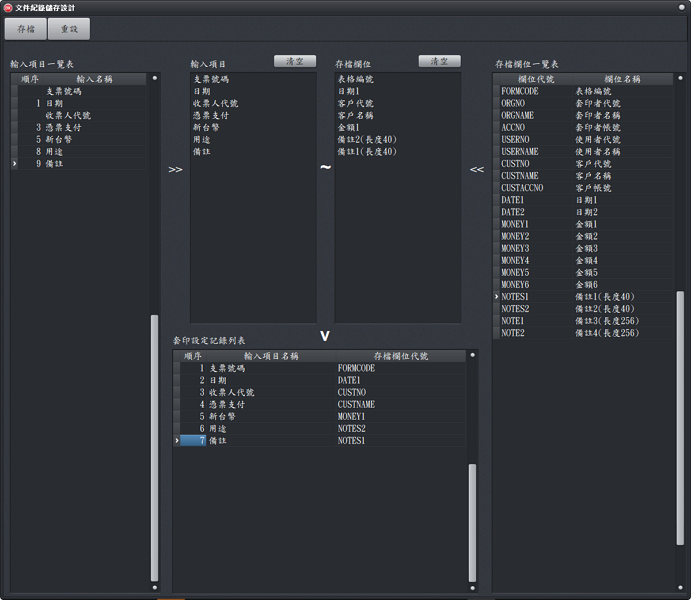

文件記錄儲存設計
有編號文件進行領用登錄後，可以在這裏設定要將那些欄位進行存檔，以供日後查詢分析的依據。

套印記錄存檔設計視窗
基本操作說明：
- 重設：可將「輸入項目一覽表」的資料全部匯入「輸入項目」區域，並將「存檔欄位」區域的資料清空。
- 加入：以滑鼠左鍵快點2下的方式將「輸入項目一覽表」的資料加入「輸入項目」，或者將「存檔欄位一覽表」的資料加入「存檔欄位」。
- 刪除：以滑鼠左鍵快點2下的方式將「輸入項目」或「存檔欄位」指定項目刪除。
- 用滑鼠左鍵按住「輸入項目」或「存檔欄位」內的指定項目不放，就可移動該項目到您要位置。
功能說明
- 輸入項目一覽表：
- 其內容係參照輸入介面設計視窗的「輸入欄位一覽表」產生
- 「順序」：無順序編號的「輸入名稱」，係由「輸入介面設計」視窗加入的項目，通常用於查詢或輔助輸入功能。有順序編號的輸入名稱，為套印的項目。
- 存檔欄位目一覽表：
- 用於儲存文件的填寫記錄的地方(資料表)。
- 輸入項目與存檔欄位使用說明：
- 2邊的數量必需一致，列如各4個。
- 類型要一致。例如日期，就只能配合日期類型的資料，例如日期一，配對錯誤，因為無法存檔，系統出現錯誤警示。同類型如果有多個編號，通常就選第一個如日期一，所有相同的文件都依循相同的規則，後續查詢分析才能順利進行。
- 同類型的文件設定最好一致，例如支票，到期日固定用日期一，不然整合性查詢時會產生困擾。例如設定3家銀行的支票，如果有一家的日期設定為日期一，另外二家設定為日期二，雖然各別查詢沒有問題，但是如果要整合查詢時，就無法以日期作為條件，對3種支票進行整合性查詢。
- 套印設定記錄列表：顯示輸入項目與存檔欄位配對結果。